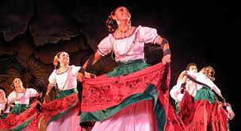

Vestido de la “Galereña”
Fue una indumentaria cotidiana hace unos siglos atrás y hoy día es un traje
folclórico que representa a la mujer guanajuatense.
Consiste en tres coloridas capas de faldas de corte A, sobrepuestas de diferentes
detalles e iban desde la cintura. La primera y segunda capa eran de uso doméstico
y la tercera la usaban cuando iban a salir.
El dorso femenino es cubierto por una blusa blanca de escote cuadrado bordado
como las cortas mangas
Ornamentaban la vestimenta collares y aretes de colores llamativos, pañoletas,
pulseras, moños y sofisticadas trenzas. Portaba una batea de madera en la que
depositaba los trozos de piedra donde yacía el metal.
Se le llama “Galereña” porque las mujeres utilizaban este atuendo para acompañar
a sus esposos e hijos mayores a su trabajo en las galeras, afuera de las minas.
